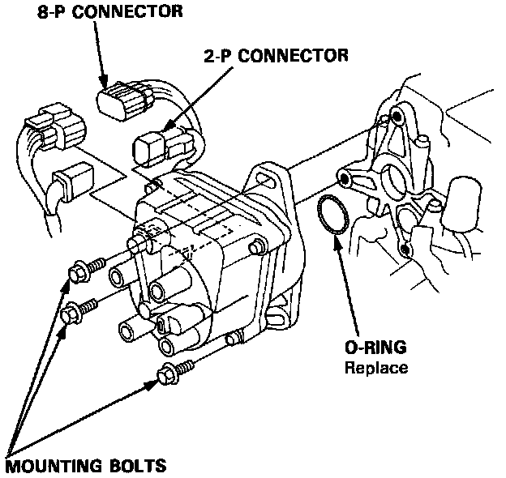

Removal & Inspection
Distributor Removal:

1. Disconnect the 2-P and 8-P connectors from the distributor.
2. Disconnect the spark plug wires from the distributor cap.
3. Remove the distributor hold-down bolts, then remove the distributor from the cylinder head.
DISASSEMBLY AND REASSEMBLY
Distributor Components:

4. Use the exploded view image for distributor disassembly.
5. The Top Dead Center/Crank Position/Cylinder Position (TDC/CKP/CYP) sensor is replaced as part of the distributor housing assembly. Transfer any needed parts from the original distributor.